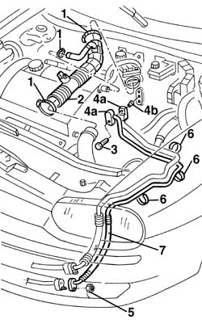
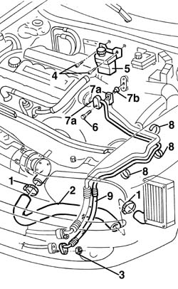

5040A57 evaporator inlet pipe - r r
- Path
- Procedures > 50 AUXILIARY UNITS > 5040 AIR CONDITIONING CASING AND COMPONENTS > 5040A air conditioner coolant circuit > 5040A57 evaporator inlet pipe - r r
- Kind
- repair procedure (removal / refitting; the operation number is the code)
- Applies to
- engines: 1.6 TS , 1.8 TS, 2.5 V6, 1.9 JTD 8v , 2.4 JTD 10v; all production periods
- Interactive page
- https://sloeber94.github.io/elrnDB-a156/en/#/3238315
Applies to: all engines; all production periods
Applies to: engines: 1.6 TS , 1.8 TS, 2.5 V6; all production periods; only with equipment: Air Conditioner
 Removing
Removing
 Refitting
RefittingPosition the car on the lift.
Drain the coolant. 5040A10 Air conditioning refrigerant CIRCUIT - Draining and Refilling
5530B52 Battery DRIP TRAY/SUPPORT - R.R.
1048A10 air cleaner filtering element - replace
1. Loosen the clamps.
2. Remove the air pipe from throttle casing air filter.
3. Unscrew the screw.
4. Disconnect the unions (4a) and keep the bushing (4b).
5. Unscrew the union fastening nut.
6. Release the clamps.
7. Remove the pipe.

Applies to: engines: 1.6 TS , 1.8 TS, 2.5 V6; all production periods; only with equipment: Air Conditioner
Refitting
RemovingCheck that the pipe is not damaged or slitted.
Reposition the pipe fastening it with the clamps.
Reposition the bushing, connect the evaporator union and fasten it with the screw.
 | Fastening | Component | Ø | Value (daNm) |
|---|---|---|---|---|
- | Bolt | Evaporator connector | M6 | 0.9 - 1.2 |
Lift the car, connect the intermediate union and block it with the nut.
| Fastening | Component | Ø | Value (daNm) |
|---|---|---|---|---|
- | Nut | Intermediate connector | M6 | 0.9 - 1.2 |
Reassemble the air pipe throttle casing air filter.
1048A10 air cleaner filtering element - replace
5530B52 Battery DRIP TRAY/SUPPORT - R.R.
Reload the coolant. 5040A10 Air conditioning refrigerant CIRCUIT - Draining and Refilling
Remove the car from the lift.
Applies to: all engines; all production periods
Applies to: engines: 1.9 JTD 8v , 2.4 JTD 10v; all production periods; only with equipment: Air Conditioner
Removing
RefittingPosition the car on the lift.
Drain the coolant. 5040A10 Air conditioning refrigerant CIRCUIT - Draining and Refilling
5530B52 Battery DRIP TRAY/SUPPORT - R.R.
1048A10 air cleaner filtering element - replace
1. Loosen the clamps.
2. remove the air pipe from multistage centrifugal blower to intercooler.
3. Unscrew the union fastening nut.
4. Lower the car and unscrew the power steering fluid reservoir.
5. Move the power steering fluid reservoir .
6. Unscrew the screw.
7. Disconnect unions (7a) and keep the bushing (7b).
8. Release the clamps.
9. Remove the pipe.

Applies to: engines: 1.9 JTD 8v , 2.4 JTD 10v; all production periods; only with equipment: Air Conditioner
Refitting
RemovingCheck that the pipe is not damaged or slitted.
Reposition the pipe fastening it with clamps.
Reposition the bushing, connect the evaporator unit and block it with the screw.
| Fastening | Component | Ø | Value (daNm) |
|---|---|---|---|---|
- | Bolt | Evaporator connector | M6 | 0.9 - 1.2 |
Position the power steering fluid reservoir and fasten it with screws.
Lift the car, connect the intermediate union and block it with the nut.
| Fastening | Component | Ø | Value (daNm) |
|---|---|---|---|---|
- | Nut | Intermediate connector | M6 | 0.9 - 1.2 |
Reassemble the air pipe from multistage centrifugal power to intercooler.
Fasten the clamps.
1048A10 air cleaner filtering element - replace
5530B52 Battery DRIP TRAY/SUPPORT - R.R.
Reload the coolant. 5040A10 Air conditioning refrigerant CIRCUIT - Draining and Refilling
Remove the car from the lift.